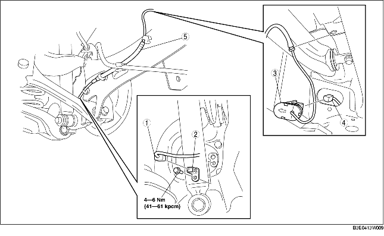

1. Ta bort den undre kåpan (bakre).
2. Demontera i den ordning som anges i tabellen.
3. Montera i omvänd ordning mot demonteringen.

.
|
1
|
Kontakt
|
|
2
|
Bakre ABS hjulhastighetsgivare
|
|
3
|
ABS skyddslock
|
|
4
|
Kontakt
|
|
5
|
Kablage för bakre ABS hjulhastighetsgivare
|
1. Koppla ur den bakre automatiska nivåjusteringsgivaren. (Fordon med automatisk nivåjusteringsgivare)
2. Tryck på hållaren på ABS-skyddslocket för att separera ABS-skyddslocket från höljet.
3. Ta bort ABS-skyddslocket från höljet.
1. Dra den bakre ABS-hjulhastighetsgivarens kablage utanför bakre parkeringsbromsvajern så som bilden visar.
2. Montera kablaget för bakre ABS hjulhastighetsgivare.
1. Sätt in ABS-skyddslocket i höljet så att pilen på locket är riktad mot fordonets utsida.